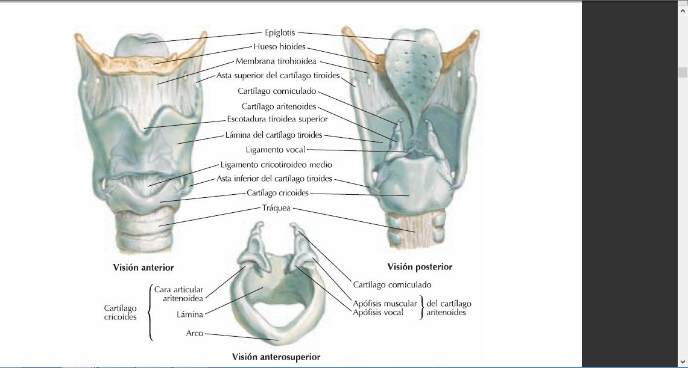
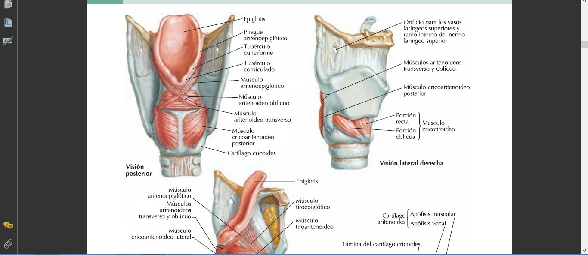
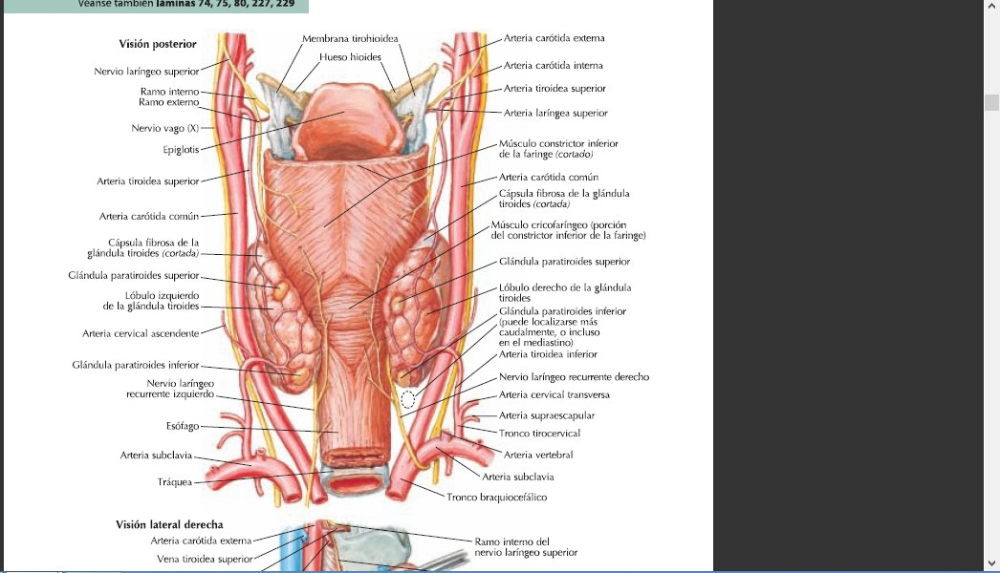
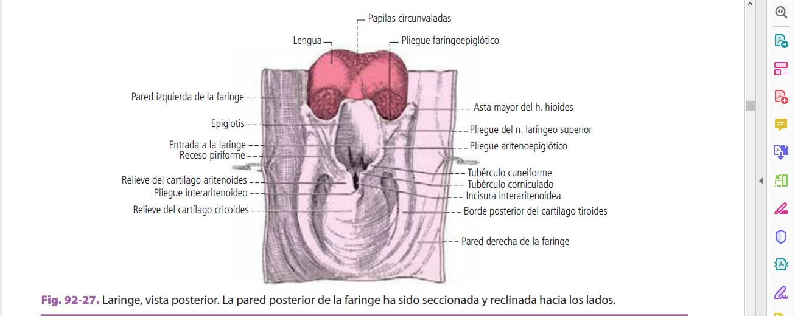

ClinicusMed · Dossiê Clinicus — Padrão de Excelência
Órgão ímpar, simétrico, superficial — exterioriza-se e é palpável através da pele. Mede aproximadamente 4,5 cm de altura, 4 cm de largura e 3,5 cm de profundidade (ântero-posterior).
Situada na parte mediana e anterior do pescoço, abaixo do osso hioide e da língua, na frente da faringe (com a qual se comunica acima). Embaixo, prolonga-se pela traqueia. Projeta-se entre C3 (acima) e a borda inferior de C6 (abaixo).
A laringe se mantém em posição por:
Por isso, a laringe se move durante a deglutição. Embaixo, conecta-se à traqueia, que acompanha seus movimentos.
A laringe é constituída por:

Existem 5 cartilagens principais e 6 a 8 acessórias:
| Principais (5) | Detalhe |
|---|---|
| Tireoide | A mais volumosa |
| Cricoide | Abaixo da tireoide |
| Epiglote | Atrás e acima da tireoide |
| Aritenoides (2, par) | Acima da lâmina da cricoide |
| Acessórias | Detalhe |
|---|---|
| Corniculados (de Santorini) | 2, sobre o vértice dos aritenoides |
| Cuneiformes (de Morgagni/Wrisberg) | 2, inconstantes, na prega ariepiglótica |
| Sesamoides | 2-4, inconstantes |
A peça principal — 2 lâminas quadriláteras unidas na frente, separadas atrás, formando um ângulo aberto posteriormente.
| Parte | Descrição |
|---|---|
| Borda anterior | Abaixo da incisura tireóidea superior: a proeminência laríngea (pomo de Adão) |
| Borda superior | Arredondada, com incisura profunda na linha média |
| Borda inferior | Irregular, sinuosa, com o tubérculo marginal |
| Asta superior (maior) | Dirige-se para cima e medialmente — insere o ligamento tiro-hioideo lateral |
| Asta inferior (menor) | Curta, cilíndrica — faceta articular para a cricoide |
Abaixo da tireoide — toda a laringe se apoia sobre ela. Anular, mais alta atrás que na frente. Tem um arco (anterior/lateral) e uma lâmina (posterior).
Ímpar, mediana, forma oval. Parte inferior (afinada) situada no ângulo entrante da tireoide; extremidade superior ultrapassa o nível do hioide.
| Face/Extremidade | Descrição |
|---|---|
| Anterior | Parte superior livre, atrás da língua — forma as pregas glossoepiglóticas (1 medial + 2 laterais), delimitando as valéculas epiglóticas |
| Posterior | Lisa na região mediana; laterais com depressões (glândulas mucosas) |
| Inferior (pecíolo) | Afina-se e continua no ligamento tiro-epiglótico, fixando-se no ângulo da tireoide |
2 (direita e esquerda), apoiadas sobre a borda superior da lâmina da cricoide.
| Parte | Descrição |
|---|---|
| Base | Faceta articular elíptica + 2 saliências: apófise vocal (anteromedial — insere o ligamento vocal) e apófise muscular (posterolateral — insere o cricoaritenóideo posterior e o cricoaritenóideo lateral, 2 músculos ANTAGONISTAS) |
| Vértice | Truncado, articula-se com o cartílago corniculado |

São 12 músculos intrínsecos, em 3 grupos:
6 Laterais: cricoaritenóideos laterais (D+E), tiroaritenóideos (D+E), vocais (D+E).
| Músculo | Descrição | Inervação |
|---|---|---|
| Cricotireóideo | Triangular. Vértice no tubérculo cricoideo; base na borda inferior da tireoide + asta inferior. 2 porções: reta (medial, fibras verticais) e oblíqua (lateral). Os 2 músculos (D/E) separados pela "V laríngea" | Ramo externo do n. laríngeo superior |
O cricotireóideo é o único músculo intrínseco da laringe inervado pelo laríngeo SUPERIOR — todos os outros 11 recebem inervação do laríngeo RECORRENTE. É também o único tensor primário da prega vocal (alonga e tensiona), enquanto todos os outros regulam abertura/fechamento da glote. Essa dupla exceção (inervação + função) é o motivo de ele ser cobrado à parte em praticamente toda prova de laringe.
| Músculo | Inserções | Ação |
|---|---|---|
| Cricoaritenóideo posterior | Metade inferior da face posterior da lâmina da cricoide → face posteromedial da apófise muscular do aritenoide | ÚNICO abdutor da glote (abre a via aérea) |
| Aritenóideo oblíquo | Ímpar/mediano, 2 fitas cruzadas na linha média, da apófise muscular do aritenoide ao vértice do cartílago oposto | Adução (fechamento) da glote |
| Aritenóideo transverso | Ímpar/mediano, borda lateral e faces posteriores dos 2 aritenoides | Adução (fechamento) da glote |
| Músculo | Descrição |
|---|---|
| Cricoaritenóideo lateral | Insere-se embaixo, na parte posterolateral da borda superior do arco cricóideo — antagonista do cricoaritenóideo posterior: adutor da glote |
| Tiroaritenóideo | Um dos músculos essenciais da laringe — fecha a fenda glótica, aproximando as pregas vocais da linha média. Insere-se no ângulo entrante da tireoide → apófise muscular e face anterolateral do aritenoide |
| Vocal | Imediatamente profundo ao tiroaritenóideo — dá forma e relevo à prega vocal. Insere-se na parte mediana do ângulo entrante da tireoide → apófise vocal do aritenoide. É o "ajuste fino" da tensão da prega vocal durante a fonação |
Em um corte coronal, a cavidade laríngea é estreitada na parte média pelas pregas vestibulares (acima) e pregas vocais (abaixo). Entre elas se interpõe o ventrículo laríngeo.
| Nível | Descrição |
|---|---|
| Supraglote (vestíbulo) | Da entrada da laringe até as pregas vestibulares (falsas pregas vocais) |
| Glote | Pregas vocais (verdadeiras) + ventrículo laríngeo entre elas e as pregas vestibulares |
| Subglote (infraglote) | Das pregas vocais até a borda inferior da cricoide, continuando-se com a traqueia |
| Artéria | Trajeto |
|---|---|
| Laríngea superior | Atravessa a membrana tiro-hioidea; dá ramos ascendentes (região epiglótica) e descendentes (pregas vocais) |
| Ramo cricotireóideo (laríngea externa) | Ramo da tireóidea superior — desce verticalmente por fora da tireoide, penetra na laringe perfurando a membrana cricotireóidea |
| Laríngea inferior (posterior) | Ascende verticalmente acompanhando o nervo laríngeo recorrente |

O vago (X) fornece, de cada lado, 2 nervos à laringe:
| Nervo | Ramos | Função |
|---|---|---|
| Laríngeo superior | Ramo interno | Sensitivo (mucosa acima das pregas vocais) — atravessa a membrana tiro-hioidea, passa pelo hiato faríngeo médio |
| Ramo externo | Motor — único músculo que inerva: cricotireóideo — passa pelo hiato faríngeo inferior | |
| Laríngeo recorrente | — | Motor de TODOS os outros 11 músculos intrínsecos + sensitivo da mucosa abaixo das pregas vocais |
O nervo laríngeo recorrente tem trajetos assimétricos: o direito contorna a artéria subclávia direita (alça curta, na base do pescoço); o esquerdo contorna o arco da AORTA (alça longa, desce até o tórax — ver Cap. 14). Ambos sobem de volta ao pescoço no sulco traqueoesofágico, correndo muito próximos à face posterior da glândula tireoide — exatamente onde o cirurgião liga a artéria tireóidea inferior durante uma tireoidectomia. É por isso que a lesão do recorrente é a complicação mais temida dessa cirurgia.
| Lesão | Prega vocal | Quadro clínico |
|---|---|---|
| Recorrente unilateral | Paralisada em posição paramediana (um lado) | Rouquidão — via aérea geralmente preservada (lado saudável compensa) |
| Recorrente bilateral | As 2 paralisadas em posição paramediana | Obstrução aguda da via aérea — emergência, pode precisar de traqueostomia (ver Casos Clínicos) |
| Laríngeo superior (ramo externo) isolado | Cricotireóideo paralisado | Voz fica mais grave/monótona, fadiga vocal — sem obstrução de via aérea (é só o tensor que falha) |

| Direção | Relação |
|---|---|
| Acima e adiante | Base da língua |
| Lateral e atrás | Faringe (continuidade da mucosa laríngea com a mucosa faríngea) |
Essa continuidade da mucosa — bucal/lingual na frente e acima, faríngea nos lados e atrás — é exatamente a mesma "encruzilhada aerodigestiva" descrita no Cap.14: a laringe é o ponto onde a via aérea se isola definitivamente da via digestiva, protegida pelo fechamento reflexo da glote e pela ação da epiglote durante a deglutição.
A laringe realiza 2 tipos de movimento:
| Tipo | Descrição |
|---|---|
| Extrínsecos | Laringe inteira se move em relação à coluna cervical, face e tronco (ex: subida na deglutição) |
| Intrínsecos | As cartilagens se movem umas em relação às outras (ação dos 12 músculos intrínsecos) |
Esses movimentos participam de 3 funções essenciais:
| Função | Mecanismo |
|---|---|
| Deglutição | Leva o bolo alimentar à laringofaringe/esôfago; o orifício superior da laringe se fecha para proteger a via aérea |
| Respiração (ventilação) | A laringe é percorrida pelo ar inspirado e expirado — depende do cricoaritenóideo posterior mantendo a glote aberta |
| Fonação | A laringe é o instrumento emissor de som, graças aos 2 cones elásticos e suas extremidades: os ligamentos vocais |
Um caso cirúrgico clássico: diferenciar clinicamente lesão do nervo laríngeo recorrente (uni vs. bilateral) da lesão do ramo externo do laríngeo superior — o raciocínio mais cobrado em provas de cirurgia de cabeça e pescoço.
A Clinicus selecionou este conteúdo para complementar seu estudo. Não substitui a leitura do resumo — o resumo ensina, o vídeo reforça.
Carregando recomendações...
O sistema guarda, no seu navegador, quais cards você já sabe bem e quais precisam voltar mais cedo — cada vez que você avalia um card, ele recalcula quando ele deve voltar.
10 questões, do mais básico ao mais puxado. Escolhe uma alternativa, depois clica em "Ver comentário completo" — vale a pena ler até quando você acerta, porque o comentário explica cada alternativa, não só a certa.